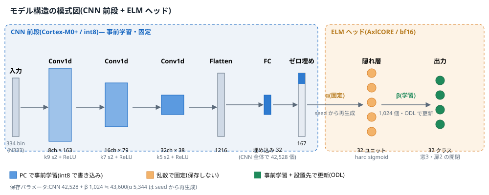
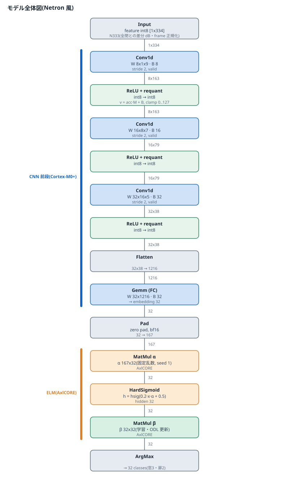

学習方法のまとめ
IchiPing on Solist-AI(REHC2026 応募作品)で、どのデータを使い、どこで・どの手法で学習したかの整理。 詳細な経緯は 開発記録、初期検証(公式 Sim)の報告は 移植レポート を参照。
要点
- 教師あり学習(32 通りの窓・扉の開閉状態をラベルとする分類)を行っている。
- 初期検証では ROHM 公開の教師あり学習サンプルと公式 Solist-AI Sim を参照して学習・推論を試した。
- 完成版のモデルは、ROHM のツールではなく 自作の PC 学習環境(Python / numpy)で学習し、実機へ書き込んでいる。
- CNN 前段は PC の CPU で独自に学習している。実機上の現地校正(ODL)は Cortex-M0+ の float32 で自前実装した。
1. 学習の流れ
| 段階 | 内容 | 使ったもの |
|---|---|---|
| A. 事前調査(2026-06) | ROHM 資料(Solist-AI Sim 教師あり学習クイックスタート、ODL アプリケーションノートなど)と教師あり学習のサンプルを参照し、公式 Sim で ELM の学習・推論を再現。D167 特徴(時間波形 baseline 差分 → 1024 点 FFT → 167 点)で 14 クラス 99.4%(同一日の別セッション)、32 クラスは現地データ追加で 99.1%。 | 公式 Solist-AI Sim(SLV1.00.04)、サンプル、ROHM 資料 |
| B. 自作の PC 学習環境(2026-09) | Sim は GUI 操作が前提で大量の再学習・交差検証に向かないため、Sim の ELM(固定乱数 α、出力 β のみ学習)を numpy で再現し、PC で学習・評価するスクリプト群を整備(sim/solist_elm.py ほか)。 | Python / numpy |
| C. CNN 前段 + ELM(2026-09) | ELM だけでは日をまたぐ汎化が不足(32 クラス 66.3%)。int8 小型 CNN(Conv1d 8/16/32 → FC 32 次元, 約 42 KB)を PC の CPU で学習し、埋め込みを ELM ヘッドへ渡す構成へ変更(89.7%)。 | PC(CPU)での独自学習、sim/emit_frontend_model.py |
| D. 事前学習モデルの選定 | UNO Q 版データ 8 セッション + 実機ハード(Stamp-S3A)で採取した 13 セッション(4,290 フレーム)で学習。周波数シフト(±0.5%)と別セッション baseline 差分の水増しを併用。時間帯ブロック hold-out で選定し、平均 98.7%。 | sim/eval_stamp_mix.py、BEST_MODEL.md |
| E. 現地校正(ODL) | 設置先で全 32 状態をサーボで巡回し、OS-ELM で β を逐次更新。AxlCORE 内蔵学習(bf16)は β が発散したため、更新だけ CPU の float32 で計算し、β を bf16 にして AxlCORE へ書き戻す。 | 自前実装(firmware/IchiPingInference) |
モデル構造
N333 特徴(334 bin)を int8 の 3 層 Conv1d と全結合で 32 次元の埋め込みにし、ゼロ埋めで 167 入力にして ELM(隠れ 32 → 出力 32 クラス)へ渡す 2 段構成。

全体図(層ごとの形状・パラメータ)

2. ROHM サンプル・Sim の利用範囲
- 参照・利用した範囲:Solist-AI Sim による ELM の学習・推論の動作確認、ELM(α 固定・β 学習)の仕様把握、ODL の仕様把握。α の再生成が Sim 出力と一致することも確認している(167 入力)。
- 利用していない範囲:完成版モデルの学習そのもの(PC 上の自作環境)。CNN 前段の学習。実機での float32 ODL。
- Sim の on-device 学習は、本検証の条件では結果が信頼できなかったため、学習の根拠には使っていない。
3. 独自に行った学習・評価
- データ採取:Stamp-S3A が PRBS を再生しながら録音、サーボで 32 状態を自動巡回して収録(
firmware/StampMeasure)。 - 特徴:2048 点 FFT → Welch → dB → 全閉との差分 → frame 正規化 → 400–3000 Hz の 334 bin → int8(N333)。PC 参照実装はファームと同じ整数演算。
- CNN 前段:PC の CPU で学習 → int8 量子化 → C 配列としてファームへ出力。
- 評価ルール:評価セッションは学習・標準化・ハイパーパラメータ選択に使わない。セッション単位の leave-one-out と、時間帯ブロック hold-out で採点(開発記録 §4)。
- 実機検証:サーボで 32 状態を 1 回ずつ作り Solist 単体で推論するサーベイを 9 回実施。最終版は実機 32/32 を複数回、校正後も 32/32(results/)。
4. REHC 事務局からの確認への回答(要約)
| 質問 | 回答 |
|---|---|
| ① 教師あり学習を行っているか | Yes |
| ② ROHM の教師あり学習サンプルソフトを使用したか | Yes(初期検証で参照・利用。完成版の学習は自作の PC 環境) |
| ③ その他の手法で共有できる内容 | PC 上の独自 CNN 前段学習、実機採取データでの再学習、時間帯 hold-out による選定、float32 による現地校正(ODL)。上記のとおり公開。 |
5. 資料の所在
| 内容 | 場所 |
|---|---|
| 学習・評価スクリプト | sim/ |
| 探索結果(IMPROVE_LODO, IDEAL_VS_SOLIST, TINY / CNN_FRONTEND_LODO, STAMP_MIX, RUN_SHIFT, ODL_CALIBRATION, BEST_MODEL) | sim_export/solist_ds/*.md |
| 推論・校正ファーム | firmware/IchiPingInference |
| 開発記録 | docs/DEVELOPMENT.md |